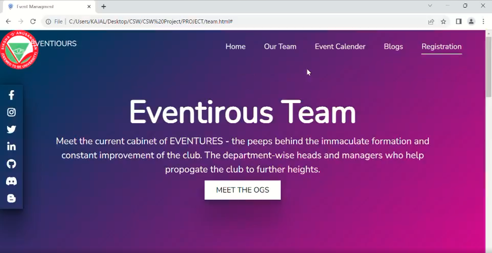
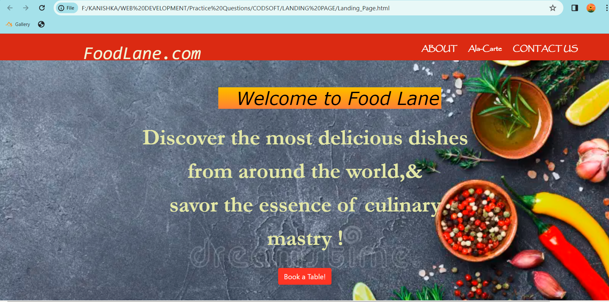

About Me
Hello, I am Kanishka Shrimali, an undergrad student majoring in Computer Science.
Proficient in Java, Data Structures and Algorithms, I am currenly on the path of full-stack web development.
Having an expertise in HTML, CSS, jQuery and BootStrap I am ready to dive into the domain of backend development and widen my prism of knowledge.
My major project displaying my creative skills includes-an Event Management Website which is designed so as to tackle the entire organisation and management of events typically aimed for colleges.
Apart from academics, I take keen interest in sports and play table tennis and lawn tennis, and to fuel my creative pursuits I also like to indulge in painting and sketching.
To sum up, I consider myself a dedicated and strong headed individual with my goal being to leverage my skills and expertise to make a meaningful impact in the world
of technology, contributing to innovative projects and driving a positive change through the field of software development.
To learn more about my work, check out my Resume. Thanks for stopping by!
KEY SKILLS
HTML
CSS
Java
jQuery
Bootstrap
Data Structures & Algorithms
PROJECTS
Project 1: EVENTIROUS
Eventirous acts as an event management system, typically designed to handle all the managerial activites ensuring better organisation. Key features being: dynamic home page, event calendar, registration page, blog AI wherein, my role was focussed on crafting the front-end, typically the registration page for a seamless, user-centric experience
Project 2: FoodLane.com
One of my notable projects is the development and design of a dynamic restaurant website for FoodLane.
The website was meticulously crafted using HTML, CSS, jQuery and BootStrap to reflect the unique identity and ambiance of the restaurant, offering visitors an immersive experience that captures the essence of fine dining. From elegant design elements to intuitive navigation, every aspect of the website was carefully considered to ensure seamless functionality and user engagement.
Contact Me
You can reach me at
kanishkashrimali09@gmail.com
Phone: +91 9070036XXXX